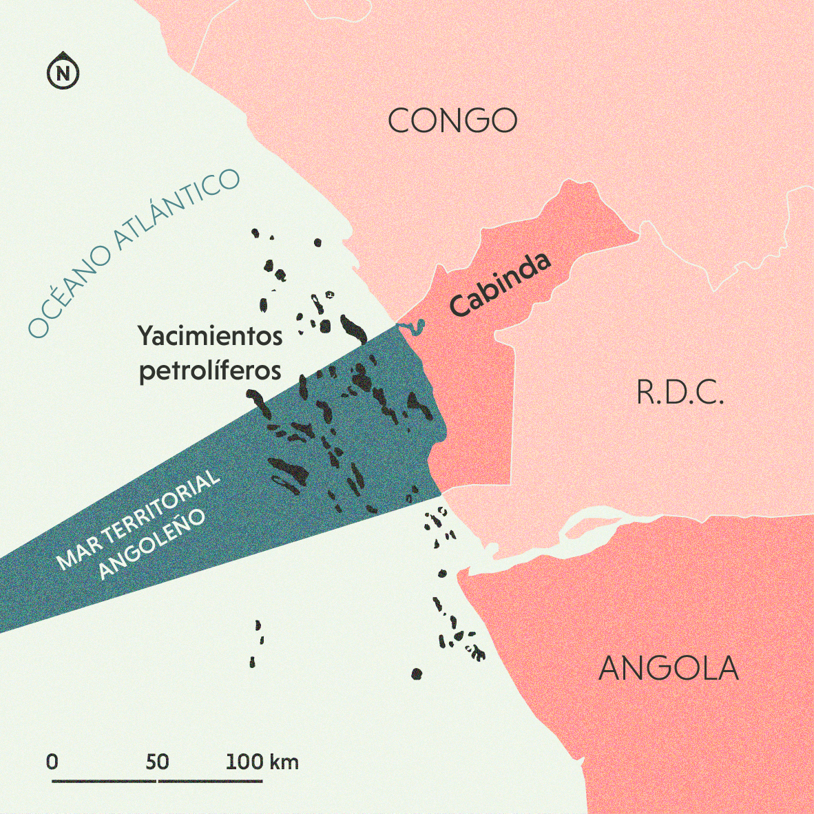
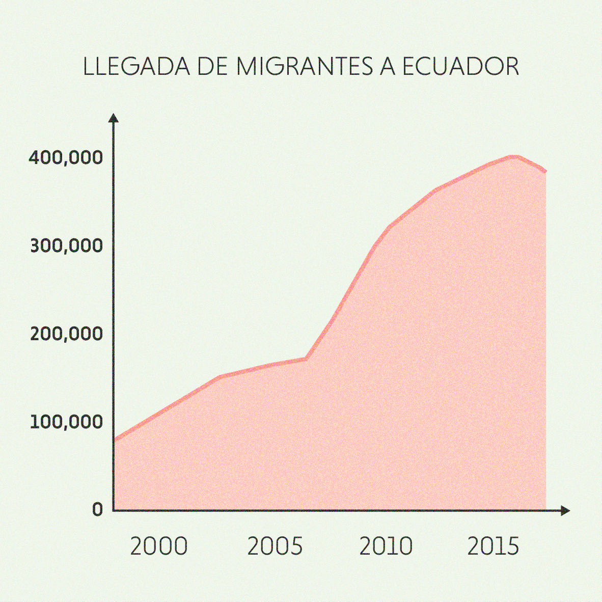
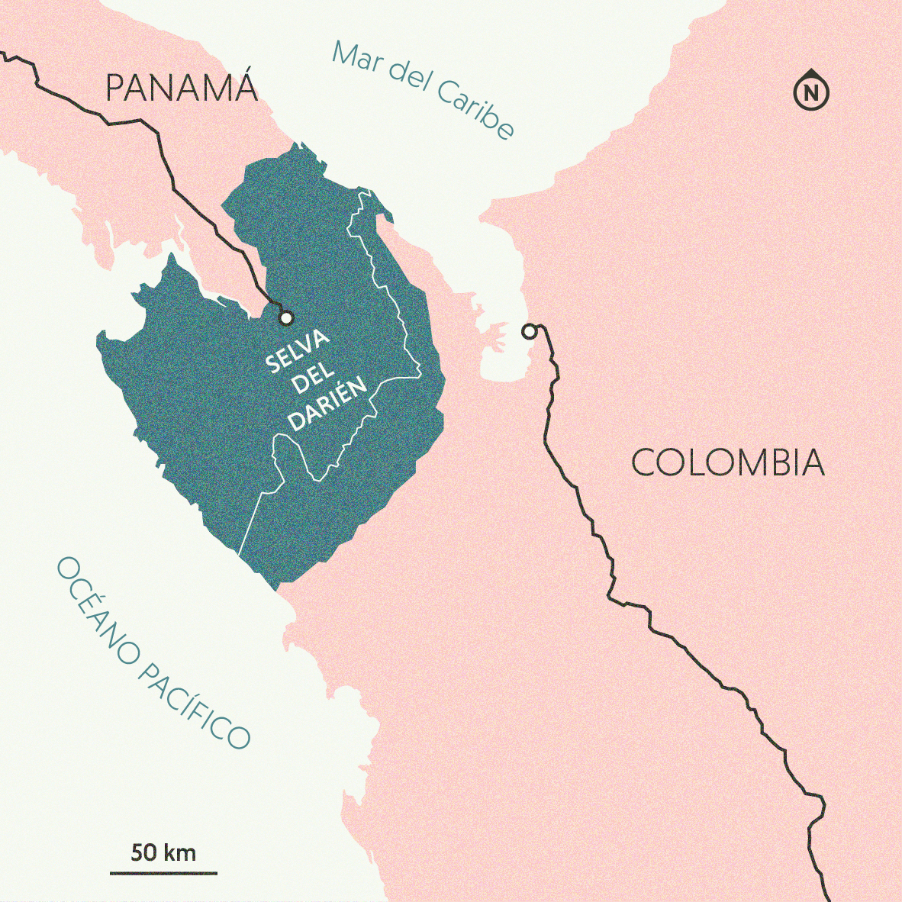
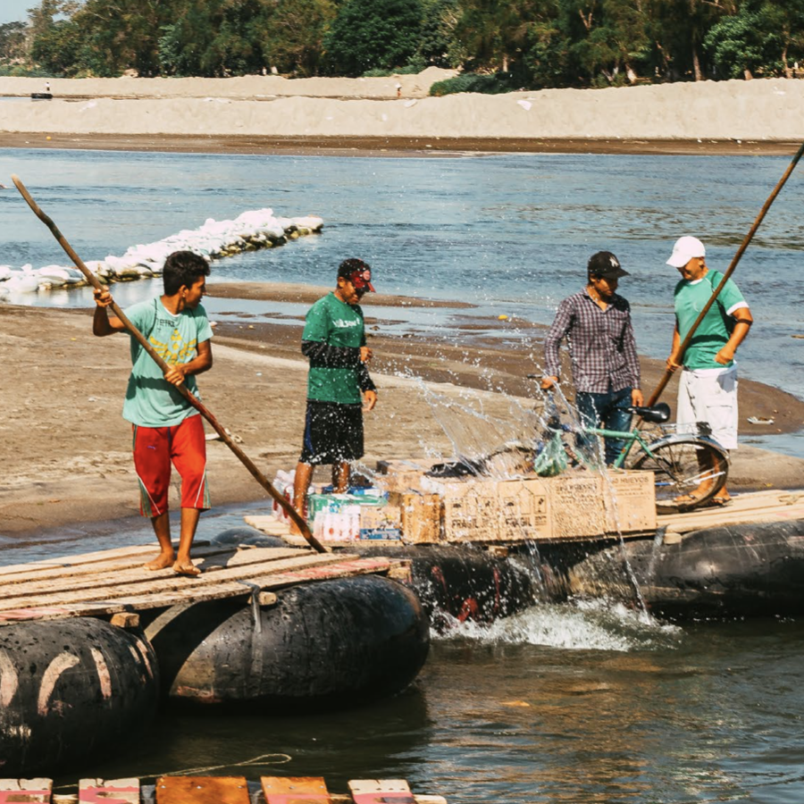
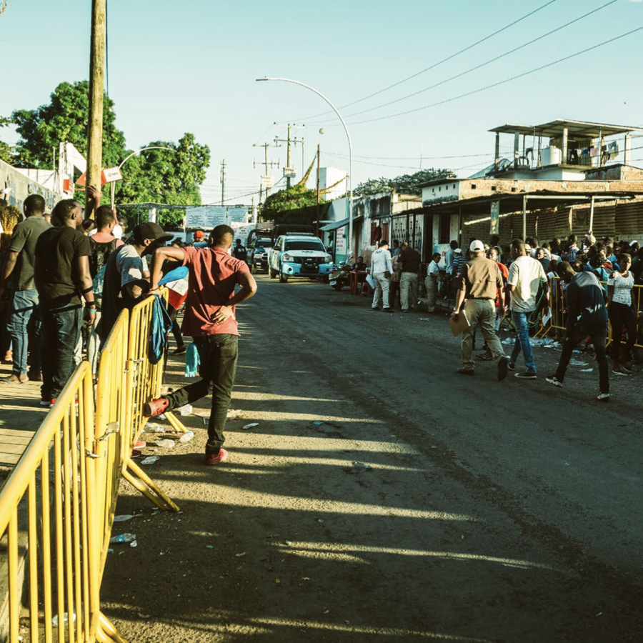

Matías es un angoleño de 41 años, padre de 4 hijos. En 2019, emprendió un viaje que lo llevó a las orillas del país más rico del mundo. Su recorrido es un testimonio de un mundo globalizado donde decisiones estatales, el pragmatismo económico y cinismo político afectan dramáticamente las condiciones de vida de miles de personas.
Les proponemos seguir las etapas de la odisea de Matías en África y América Latina, revelando una ruta migratoria del sur global, trastornada por la Pandemia.
Antes de empezar su viaje, Matías trabajaba en la industria petrolera, sobre las plataformas que salpican el horizonte del litoral angoleño. Este trabajo le permitió mantener un estatus de vida alto, pudiendo incluso comprarse un departamento en Luanda, capital de Angola y, en aquel entonces, la ciudad más cara de África. Estas buenas condiciones de vida empezaron a degradarse en 2017, año de transición política y de crisis económica en el Estado angoleño.
El viaje de Matias empieza en Cabinda, un territorio exclave de Angola donde, desde la independencia del país, existe una guerrilla separatista y donde, al mismo tiempo, se produce el 80% del petróleo angoleño. Por formar parte de una asociación a favor de una mayor autonomía del territorio, Matias y sus compañeros de lucha fueron encarcelados en una prisión militar en Febrero del 2019. Prisión de la cual Matías logró escapar en la noche, para luego cruzar clandestinamente la frontera con el Congo (R.D.C.).
Después de cruzar el Congo, Matías regresó a Luanda, donde se habían quedado su pareja y sus hijos. Perseguidos por los servicios de inteligencia del estado y en un contexto económico muy desfavorable, tuvieron que vender a pérdida su departamento. Desde 2015, Angola atraviesa una profunda crisis económica, ocasionada por la caída de los precios del petróleo, provocando una inflación mensual de 25%. Esta situación empeoró cuando el estado decidió, por razones políticas, bloquear todas las transacciones financieras con el exterior del país. Con el dinero que lograron reunir la familia huyó hacía Namibia, país situado un poco más al sur.
Al llegar a Windhoek, Matías no tenía una idea clara de lo que podía, quería o debía hacer. De forma evidente, era sumamente complicado y peligroso viajar con la familia entera: el mes de abril, su pareja había dado a luz a una niña y sus otros hijos tenían entre cinco y once años. La pareja decidió que Matías intentaría llegar solo a Estados Unidos y para ello, sería necesario tramitar una visa en la embajada estadounidense de Luanda. Así, Matías regresó de incógnito a Angola, a la colonia más vigilada de la capital para que finalmente su solicitud fuera rechazada. De regreso a Windhoek, se enteró gracias a un pastor angoleño refugiado que muchos compatriotas habían logrado viajar hasta Panamá.
¿Por qué no intentar lo mismo?
Matías consiguió finalmente un boleto de avión a Ecuador y decidió que haría el resto del camino por tierra. En su viaje, hizo escala en Etiopía y en Brasil. En las últimas dos décadas, Adís Abeba, capital de Etiopía, se volvió un nodo indispensable del tráfico aéreo en la región subsahariana de África. Este desarrollo estratégico ha llevado a otros países como Brasil y países europeos a ejercer presión sobre el Estado etiope para que frene el número de personas que buscan el exilio.
Brasil, la segunda parada de la travesía del Atlántico, comparte con Angola el uso del portugues y hubiera podido ser un destino ideal para Matías. Sin embargo la crisis que atraviesa y la política xenófoba del presidente Bolsonaro ha estado expulsando a un número importante de exiliados africanos y caribeños.
Matías llegó entonces a Quito, Ecuador, en Junio de 2019. Durante una década, el ex presidente Rafael Correa desarrolló una política basada en la idea de la “ciudadanía universal”: cualquier persona podía entrar, salir, transitar o trabajar en Ecuador. Al inicio esta ley buscaba otorgar una protección legal a los ecuatorianos emigrados pero permitió a miles de personas de orígenes tan diversos como afganos, filipinos o cameruneses transitar en condiciones seguras por el país andino.
De este modo, se estima que entre 35,000 y 40,000 africanos de diversos países entraron a Ecuador entre 2008 y 2018. A finales de 2019, el nuevo presidente Lenin Moreno, de corte conservador, puso un término a esta política.
En Quito, Matias conoció a otros angoleños que estaban saliendo de Brasil y que se dirigían hacía el norte. Se sumó a este grupo, haciéndose muy amigo de ellos. En algunos días, cruzaron a Colombia y llegaron a la costa caribeña, donde se subieron a lanchas para llegar a Capurganá, la punta norte de la región aislada del Chocó: la puerta de entrada al Darién. El Darién es la selva fronteriza entre Colombia y Panamá, un espacio tan inhóspito que es el único lugar donde se corta la carretera Panamericana. En esta zona del istmo se cruzan rutas de migración, de tráfico de droga, tráfico de armas y de grupos paramilitares. En pocas palabras, es uno de los lugares más peligrosos del camino, donde los migrantes se enferman, se pierden o tienen la mala fortuna de toparse en el camino con grupos criminales. Para cruzar, Matias y su grupo, compuesto de personas originarias de Bangladesh, Nepal, Yemen, Camerún, Congo y Angola, pagaron a un pollero que los llevó a la entrada de la selva y que después los dejó solos. El grupo se dispersó en la selva. Matías logró cruzar en 5 días, quedándose con un angoleño y su hijo.
Cuando Matías salió de la selva, estaba cansado y enfermo, con terribles dolores de cabeza, pero pensaba haber llegado a su destino final, Panamá. Fue una desilusión: el país centroamericano ya no recibía solicitudes de refugio y el ejército obligaba a los migrantes a salir del país. Muy debilitado, Matías cruzó la frontera con Costa Rica y llegó a San José, a un campo de refugiados de la Cruz Roja. En este campo, Matías se quedó un mes, pudo descansar y recuperarse un poco. Tras este periodo de incertidumbre, Matías decidió finalmente seguir hacia México y después Estados Unidos.
Matías cruzó el Suchiate, el río entre México y Guatemala, en Agosto 2019.
Cuando llegó la frontera estaba en ebullición, Donald Trump empezaba a presionar al gobierno mexicano para que controle el flujo de migrantes en la frontera sur. México cedió al chantaje norteamericano y envió a la Guardia Nacional a las fronteras, impidiendo el pasaje de miles de personas y deportando a los centroamericanos que llegaban. En este contexto, los migrantes africanos se vieron atrapados en una situación insoluble: el Estado mexicano les impedía el paso pero sin deportarlos y sin proponer otras opciones. En septiembre más de 6,000 migrantes africanos bloqueados empezaron a protestar, armando un campamento frente a la estación migratoria en Tapachula, la famosa ciudad fronteriza.
Para resolver el problema, a partir de Diciembre de 2019, el Estado mexicano empezó a otorgar papeles a los extracontinentales trabados en Tapachula. Matías recibió una tarjeta de residente permanente que le permitió viajar con seguridad por México, aunque decidió quedarse un tiempo en Tapachula porque le parecía más sencillo organizar el tránsito de familia desde allá. En este contexto empezó la pandemia de Covid-19. La economía de Tapachula, que depende de los flujos de personas, sufrió mucho de las medidas sanitarias. Matías, que mientras tanto había empezado a vivir con una prima lejana y su hijo recién llegados, empezó a encontrar menos y menos posibilidades de trabajo.
El proceso legal que Matías buscaba tramitar para traer a su familia a México es una visa de reunion familiar. Aunque en el papel parece sencillo, es un proceso que puede tomar meses y revelarse costoso. Como no había oportunidades de trabajo en Tapachula, Matías decidió seguir el ejemplo de la mayor parte de los migrantes africanos y fue a buscar trabajo en las maquiladoras fronterizas, esperando la oportunidad de pasar a Estados Unidos. Gracias a un compañero camerunés, encontró en septiembre de 2020 un trabajo en Tijuana, en una fábrica de acero.
Hoy, en abril de 2021, han pasado ya siete meses desde que Matías trabaja en esta fábrica. Si bien ha logrado encontrar cierta estabilidad en Tijuana, aún no ha logrado volver a ver a su esposa o sus hijos. El trámite para reunirse con su familia sigue pero sin gran éxito hasta el momento.